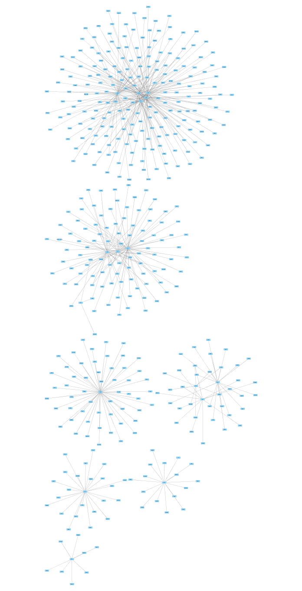
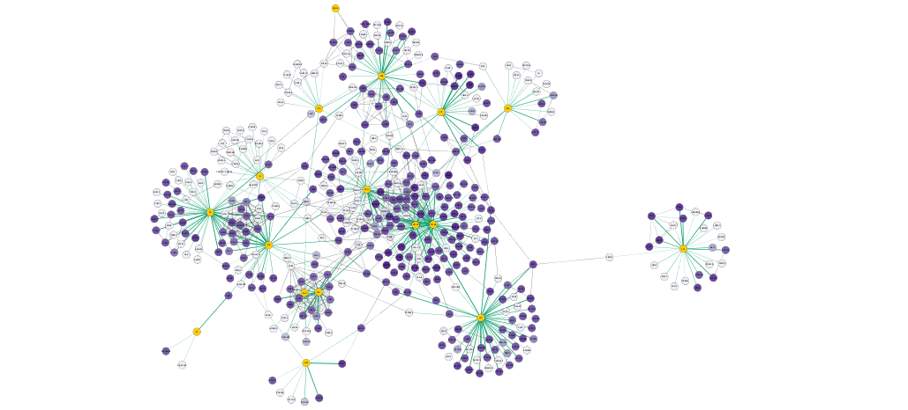

Affinity Purification-Mass Spectrometry Network Analysis Using Cytoscape and NDEx
This protocol describes how to use data from an affinity purification-mass spectrometry experiment to to generate relevant interaction networks, enriching the networks with information from public resources, analyzing the networks and creating effective visualizations.

Background
The data used for this protocol represents interactions between human and HIV proteins by Jäger et al. In this quantitative AP-MS experiment, a relatively small number of HIV bait proteins are used to pull down a larger set of human prey proteins.
Note that this tutorial does not describe how to pre-process the raw AP-MS data, the data used here is already scored and filtered.
In addition, to simplify and speed up the protocol, the tabular "AP-MS Demo Data" have been pre-imported in Cytoscape and uploaded to NDEx in network format.
Setup
This protocol requires:
Import Network Data
- Start up Cytoscape 3.7.2.
- Search the AP-MS Demo Data network in NDEx by typing "ap-ms demo data" in the
NDEx Search Box and clicking the search icon .
. - A new window will pop up, the cyNDEx Browser... Click the
Import button next to the AP-MS Demo Data network, then close the pop up window.

Import Network Data
The imported network consists of multiple smaller subnetworks, each representing a bait node and its associated prey nodes:
Augmenting the Network with Existing Protein-protein Interaction Data
Now we are going to capitalize on existing protein-protein interaction data to enrich our network; we will use the new NDEx Integrated Query (IQuery) with the human prey proteins from our network as query input.
- In the
Node Table , sort the table for your network by theUniprot column by clicking on the header once. This will sort for the human protein nodes, which are the ones with entries forUniprot . - Select all the genes in the
name column that have a correspondingUniProt ID by selecting the top item, then scroll down and hold down Shift and then selecting the last entry. ClickCtrl+C to copy. - Open your browser, go to the IQuery website, paste the list of gene symbols into the
Query Box and click the search icon to run the query. - In the following results screen, select the
Protein Interactions tab to view all query results from several different sources; although you can choose any of the sources available, for the purpose of this protocol let's select theHumanNet - XN result and then click theCytoscape icon in the top right portion of the screen.
Augmenting the Network with Existing Protein-protein Interaction Data
The IQuery result is automatically imported in Cytoscape and the resulting network (named "Direct query result on network - HumanNet - XN (LLS >=3.5)") contains known interactions between human query (prey) proteins, with a LLS score of 3.5 or greater.
Merge Networks
To incorprate these new information into our AP-MS network, we to need merge it with the IQuery result. We can use the official gene symbols available in the
- Go to
Tools → Merge → Networks... - In the
Available Networks list, select both networks and click the right arrow to add them to the list ofNetworks to Merge . - Expand the
Advanced Options interface. - In the
Matching Columns field, selectname for the AP-MS network andname for the IQuery result network if they are not already pre-set, then clickMerge .

Merge Networks
When the merged network first loads, it will not be very informative: it has the default style inherited from the AP-MS network so all nodes look the same and the layout makes it difficult to interpret.

Visualizing Results
First, let's apply a better layout to our new merged network.
- Click the
Style tab of theControl Panel , open theStyle Presets dropdown menu, scroll to the right and select thedefault visual style. - Then, Under
Layout → Settings... , select thePrefuse Force Directed Layout and change the settings as follows:- Set
Default Spring Coefficient to 5E-5 - Set
Default Spring Length to 100 - Set
Default Node Mass to 3.
- Set
- Click
Apply to apply the layout.

Visualizing Results
Now, we can create a visualization based on the
- In the
Style tab of theControl Panel , create a new style named AP-MS Jurkat Score. - Create a continuous mapping for the node
Fill Color using theJurkatScore column, then select a purple gradient from theColorBrewer palettes. - Switch the deafult node
Fill Color toyellow to highlight the HIV proteins. - Create a passthrough mapping for node
Label using thename column. - Now switch to the
Edge tab and create a continuous mapping for edgeWidth using theAP-MS Score column. - Set the width values to a range from 1 to 5.
- Create a
Discrete mapping for edgeStroke Color using theinteraction column. Choose a green color for all interactions of type interacts with. This will color all the interactions in the original AP-MS dataset.
Visualizing Results
We now have a visualization of the network highlighting the AP-MS experimental data (green edges), as well as additional known interactions from HumanNet (grey edges), with node color indicating the Jurkat Score for our human query genes and a more meaningful layout.
Visualizing Results
Zooming in on the network, specifically the POL and PR HIV nodes, we can see a set of interactions found in the original paper by Jäger et al, which represent binding of POL and PR with the translational initiation complex EIF3.

Pathway Enrichment
We can find pathway networks relevant to the host proteins using IQuery.
- On the IQuery web page, select the Pathway Enrichment tab to view pathway networks sorted by their enrichment with host proteins.
- There are three ways to sort the enrichment query results, selected the
sorting menu . Click on the "i" icon next to the sorting dropdown menu to see the documentation for each sorting method. By default, the Similarity method is used. Choose the Overlap or p-Value methods and the order of the pathways will change. - Note that because the example network that we chose is also a member of the set of pathways evaluated by IQuery, it is of course the top-ranked network found.
- Select the nth choice blah blah
Pathway Enrichment
Exporting Networks
Cytoscape provides a number of ways to export results and visualizations:
- As an image:
File → Export → Network to Image... - To a public repository:
File → Export → Network to NDEx , orFile → Export → Collection to NDEx - As a Cytoscape JSON file:
File → Export → Network to File and select Cytoscape.js JSON as the format.